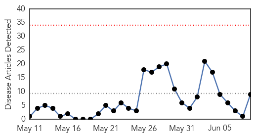

30 Day Trends
Web: 0 alerts, 0 warnings
Twitter: 0 alerts, 0 warnings
Top Articles:
- 1.000
- Sierra Leone ebola death toll 'doubles to 12 in a week'
- 1.000
- Ebola hits Mambolo, Kambia as Kailahun Weeps from its Effects
- 1.000
- Death toll from Ebola in Sierra Leone more than doubles to 12
- 0.997
- Catholic Relief Services Responds to Ebola Outbreak in Sierra Leone - Sierra Leone
- 0.996
- Growing Ebola outbreak deterring volunteers, may get much worse
- 0.996
- Death toll from Ebola in Sierra Leone more than doubles to 12
- 0.989
- Harvard team helps with Ebola detection in Sierra Leone
- 0.909
- AML operations not affected by Ebola
- 0.884
- Ebola Virus Disease Epidemic in Liberia Situation Report (Sitrep no. 26) as at 09:00 hrs; 6th June 2014 - Liberia
Top Tweets:
-
No tweets found for Jun 09, 2014
Web/News Articles
Tweets

Article Locations